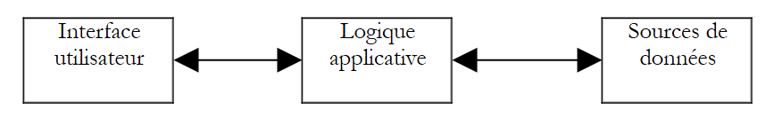
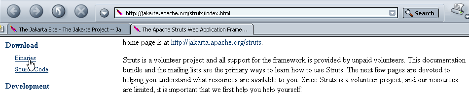
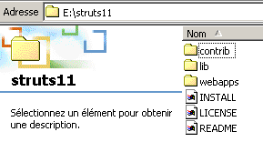
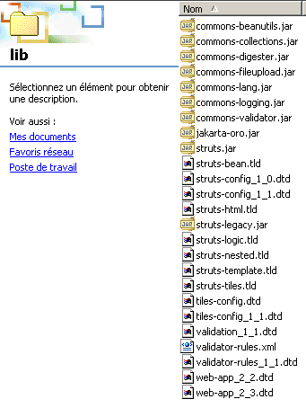
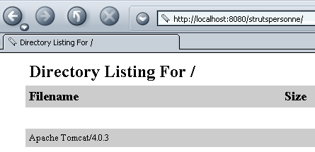
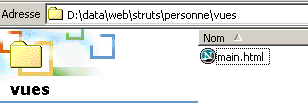

1. Généralités
1.1. Objectifs
On se propose ici de découvrir une méthode de développement appelée STRUTS. Jakarta Struts est un projet de l'Apache Software Foundation (www.apache.org) qui a pour but de fournir un cadre standard de développement d'applications web en Java respectant l'architecture dite MVC (Modèle-Vue-Contrôleur).
1.2. Le modèle MVC
Le modèle MVC cherche à séparer les couches présentation, traitement et accès aux données. Une application web respectant ce modèle sera architecturée de la façon suivante :
 |
Une telle architecture est appelée 3-tiers ou à 3 niveaux :
- l'interface utilisateur est le V (la vue)
- la logique applicative est le C (le contrôleur)
- les sources de données sont le M (Modèle)
L'interface utilisateur est souvent un navigateur web mais cela peut être également une application autonome qui via le réseau envoie des requêtes HTTP au service web et met en forme les résultats que celui-ci lui renvoie. La logique applicative est constituée des scripts traitant les demandes de l'utilisateur. La source de données est souvent une base de données mais cela peut être aussi de simples fichiers plats, un annuaire LDAP, un service web distant,... Le développeur a intérêt à maintenir une grande indépendance entre ces trois entités afin que si l'une d'elles change, les deux autres n'aient pas à changer ou peu.
Lorsqu'on cherche à appliquer ce modèle avec des servlets et pages JSP, on obtient l'architecture suivante :
 |
Dans le bloc [Logique Applicative], on distingue
- la servlet qui est la porte d'entrée de l'application qu'on appelle aussi contrôleur
- le bloc [Classes métier] qui regroupe des classes Java nécessaires à la logique de l'application.
- le bloc [Classes d'accès aux données] qui regroupe des classes Java nécessaires pour obtenir les données nécessaire à la servlet, souvent des données persistantes (BD, fichiers, service WEB, ...)
- le bloc des pages JSP constituant les vues de l'application.
1.3. Une démarche de développement MVC à l'aide de servlets et pages JSP
Nous avons défini une démarche pour le développement d'applications web java respectant le modèle MVC précédent. Nous la rappelons ici.
- On commencera par définir toutes les vues de l'application. Celles-ci sont les pages Web présentées à l'utilisateur. On se placera donc du point de vue de celui-ci pour dessiner les vues. On distingue trois types de vues :
- le formulaire de saisie qui vise à obtenir des informations de l'utilisateur. Celui-ci dispose en général d'un bouton pour envoyer les informations saisies au serveur.
- la page de réponse qui ne sert qu'à donner de l'information à l'utilisateur. Celle-ci dispose souvent d'un lien permettant à l'utilisateur de poursuivre l'application avec une autre page.
- la page mixte : la servlet a envoyé au client une page contenant des informations qu'elle a générées. Cette même page va servir au client pour fournir à la servlet d'autres informations.
- Chaque vue donnera naissance à une page JSP. Pour chacune de celles-ci :
- on dessinera l'aspect de la page
- on déterminera quelles sont les parties dynamiques de celle-ci :
- les informations à destination de l'utilisateur qui devront être fournies par la servlet en paramètres à la vue JSP
- les données de saisie qui devront être transmises à la servlet pour traitement. Celles-ci devront faire partie d'un formulaire HTML.
- On pourra schématiser les E/S de chaque vue
 |
- les entrées sont les données que devra fournir la servlet à la page JSP soit dans la requête (request) ou la session (session).
- les sorties sont les données que devra fournir la page JSP à la servlet. Elles font partie d'un formulaire HTML et la servlet les récupèrera par une opération du type request.getparameter(...).
- On écrira le code Java/JSP de chaque vue. Il aura le plus souvent la forme suivante :
<%@ page ... %> // importations de classes le plus souvent
<%!
// variables d'instance de la page JSP (=globales)
// nécessaire que si la page JSP a des méthodes partageant des variables (rare)
...
%>
<%
// récupération des données envoyées par la servlet
// soit dans la requête (request) soit dans la session (session)
...
%>
<html>
...
// on cherchera ici à minimiser le code java
</html>
- On peut alors passer aux premiers tests. La méthode de déploiement expliquée ci-dessous est propre au serveur Tomcat :
- le contexte de l'application doit être créé dans le fichier server.xml de Tomcat. On pourra commencer par tester ce contexte. Soit C ce contexte et DC le dossier associé à celui-ci. On construira un fichier statique test.html qu'on placera dans le dossier DC. Après avoir lancé Tomcat, on demandera avec un navigateur l'URL http://localhost:8080/DC/test.html.
- chaque page JSP peut être testée. Si une page JSP s'appelle formulaire.jsp, on demandera avec un navigateur l'URL http://localhost:8080/DC/formulaire.jsp. La page JSP attend des valeurs de la servlet qui l'appelle. Ici on l'appelle directement donc elle ne recevra pas les paramètres attendus. Afin que les tests soient néanmoins possibles on initialisera soi-même dans la page JSP les paramètres attendus avec des constantes. Ces premiers tests permettent de vérifier que les pages JSP sont syntaxiquement correctes.
- On écrit ensuite le code de la servlet. Celle-ci a deux méthodes bien distinctes :
- la méthode init qui sert à :
- récupérer les paramètres de configuration de l'application dans le fichier web.xml de celle-ci
- éventuellement créer des instances de classes métier qu'elle sera amenée à utiliser ensuite
- gérer une éventuelle liste d'erreurs d'initialisation qui sera renvoyée aux futurs utilisateurs de l'application. Cette gestion d'erreurs peut aller jusqu'à l'envoi d'un mél à l'administrateur de l'application afin de le prévenir d'un dysfonctionnement
- la méthode doGet ou doPost selon la façon dont la servlet reçoit ses paramètres de ses clients. Si la servlet gère plusieurs formulaires, il est bon que chacun d'entre-eux envoie une information qui l'identifie de façon unique. Cela peut se faire au moyen d'un attribut caché dans le formulaire du type <input type="hidden" name="action" value="...">. La servlet peut commencer par lire la valeur de ce paramètre puis déléguer le traitement de la requête à une méthode privée interne chargée de traiter ce type de requête.
- On évitera au maximum de mettre du code métier dans la servlet. Elle n'est pas faite pour cela. La servlet est une sorte de chef d'équipe (contrôleur) qui reçoit des demandes de ses clients (clients web) et qui les fait exécuter par les personnes les plus appropriées (les classes métier). Lors de l'écriture de la servlet, on déterminera l'interface des classes métier à écrire (constructeurs, méthodes). Cela si ces classes métier sont à construire. Si elles existent déjà, alors la servlet doit s'adapter à l'interface existante.
- le code de la servlet sera compilé.
- On écrira le squelette des classes métier nécessaires à la servlet. Par exemple, si la servlet utilise un objet de type proxyArticles et que cette classe doit avoir une méthode getCodes rendant une liste (ArrayList) de chaînes de caractères, on peut se contenter dans un premier temps d'écrire :
public ArrayList getCodes(){
String[] codes= {"code1","code2","code3"};
ArrayList aCodes=new ArrayList();
for(int i=0;i<codes.length;i++){
aCodes.add(codes[i]);
}
return aCodes;
}
- On peut alors passer aux tests de la servlet.
- le fichier de configuration web.xml de l'application doit être créé. Il doit contenir toutes les informations attendues par la méthode init de la servlet (<init-param>). Par ailleurs, on fixe l'URL au travers de laquelle sera atteinte la servlet principale (<servlet-mapping>).
- toutes les classes nécessaires (servlet, classes métier) sont placées dans WEB-INF/classes.
- toutes les bibliothèques de classes (.jar) nécesaires sont placées dans WEB-INF/lib. Ces bibliothèques peuvent contenir des classes métier, des pilotes JDBC, ....
- les vues JSP sont placées sous la racine de l'application ou un dossier propre. On fait de même pour les autres ressources (html, images, son, vidéos, ...)
- ceci fait, l'application est testée et les premières erreurs corrigées. A la fin de cette phase, l'architecture de l'application est opérationnelle. Cette phase de test peut être délicate sachant qu'on n'a pas d'outil de débogage avec Tomcat. il faudrait pour cela que Tomcat soit lui-même intégré dans un outil de développement (Jbuilder Developer, Sun One Studio, ...). On pourra s'aider d'instructions System.out.println("....") qui écrivent dans la fenêtre de Tomcat. La première chose à vérifier est que la méthode init récupère bien toutes les données provenant du fichier web.xml. On pourra pour cela écrire la valeur de celles-ci dans la fenêtre de Tomcat. On vérifiera de la même façon que les méthodes doGet et doPost récupèrent correctement les paramètres des différents formulaires HTML de l'application.
On écrit les classes métier dont a besoin la servlet. On a là en général le développement classique d'une classe Java le plus souvent indépendante de toute application web. Elle sera tout d'abord testée en dehors de cet environnement avec une application console par exemple. Lorsqu'une classe métier a été écrite, on peut l'intégrer dans l'architecture de déploiement de l'application web et tester sa correcte intégration dans celui-ci. On procèdera ainsi pour chaque classe métier.
1.4. La démarche de développement STRUTS
Les créateurs de la méthodologie STRUTS ont cherché à définir une méthode de développement standard qui respecte l'architecture MVC pour les applications web écrites en java. Il y a deux aspects au projet STRUTS :
- la méthode de développement. Nous verrons qu'elle est assez proche de celle décrite ci-dessus pour les servlets et pages JSP
- les outils qui nous permettent d'appliquer cette méthode de développement. Ce sont des bibliothèques de classes Java que l'on trouve sur le site de la fondation Apache (www.apache.org).
1.4.1. La méthode de développement
L'architecture MVC utilisée par STRUTS est la suivante :
 |
- le contrôleur est le coeur de l'application. Toutes les demandes du client transitent par lui. C'est une servlet générique fournie par STRUTS. On peut dans certains cas être amené à la dériver. Pour les cas simples, ce n'est pas nécessaire. Cette servlet générique prend les informations dont elle a besoin dans un fichier le plus souvent appelé struts-config.xml.
- si la requête du client contient des paramètres de formulaire, ceux-ci sont mis dans un objet Bean. Une classe est dite de type bean si elle observe des règles de construction que nous verrons un peu plus loin. Les objets bean ainsi créés au fil du temps sont stockés dans la session ou la requête du client. Ce point est configurable. Ils n'ont pas à être recréés s'ils l'ont déjà été.
- dans le fichier de configuration struts-config.html, à chaque URL devant être traitée par programme (ne correspondant donc pas à une vue JSP qu'on pourrait demander directement) on associe certaines informations :
- le nom de la classe de type Action chargée de traiter la requête. Là encore, l'objet Action instancié peut être conservé dans la session ou la requête.
- si l'URL demandée est paramétrée (cas de l'envoi d'un formulaire au contrôleur), le nom du bean chargé de mémoriser les informations du formulaire est indiqué.
- muni de ces informations fournies par son fichier de configuration, à la réception d'une demande d'URL par un client, le contrôleur est capable de déterminer s'il y a un bean à créer et lequel. Une fois instancié, le bean peut vérifier que les données qu'il a stockées et qui proviennent du formulaire, sont valides ou non. Une méthode du bean appelée validate est appelée automatiquement par le contrôleur. Le bean est construit par le développeur. Celui-ci met donc dans la méthode validate le code vérifiant la validité des données du formulaire. Si les données se révèlent invalides, le contrôleur n'ira pas plus loin. Il passera la main à une vue dont il trouvera le nom dans son fichier de configuration. L'échange est alors terminé. On notera que le développeur peut demander à ce que la validité du formulaire ne soit pas vérifiée. Il le fait également dans le fichiet struts-config.html. Dans ce cas, le contrôleur n'appelle pas la méthode validate du bean.
- si les données du bean sont correctes, ou s'il n'y a pas de vérification ou s'il n'y a pas de bean, le contrôleur passe la main à l'objet de type Action associé à l'URL. Il le fait en demandant l'exécution de la méthode execute de cet objet à laquelle il transmet la référence du Bean qu'il a éventuellement construit. C'est ici que le développeur fait ce qu'il a à faire : il devra éventuellement faire appel à des classes métier ou à des classes d'accès aux données. A la fin du traitement, l'objet Action rend au contrôleur le nom de la vue qu'il doit envoyer en réponse au client.
- le contrôleur envoie cette réponse. L'échange avec le client est terminé.
Commence à se dessiner la méthodologie de développement STRUTS :
- la définition des vues. On distingue les vues qui sont des formulaires et les autres.
- chaque vue formulaire donne naissance à une définition dans le fichier struts-config.xml. On y définit les informations suivantes :
- le nom de la classe Bean qui contiendra les données du formulaire ainsi que l'indication sur le fait que les données doivent être vérifiées ou non. Si elles doivent être vérifiées et qu'elles s'avèrent invalides, on doit indiquer la vue à envoyer en réponse au client dans ce cas.
- le nom de la classe Action chargée de traiter le formulaire.
- le nom de toutes les vues susceptibles d'être envoyées en réponse au client une fois que la requête a été traitée. La classe Action choisira l'une d'elles selon le résultat du traitement.
- chaque vue fait l'objet d'une page JSP. Nous verrons que dans les vues notamment les vues formulaires, on utilise parfois une bibliothèque de balises propres à Struts.
- chaque vue formulaire donne naissance à une définition dans le fichier struts-config.xml. On y définit les informations suivantes :
- l'écriture des classes Javabean correspondant aux vues formulaires
- l'écriture des classes Action chargées de traiter les formulaires
- l'écriture des éventuelles classes métier ou d'accès aux données
1.4.2. Les outils du développement STRUTS
Le projet STRUTS est l'un des projets de l'Apache Software Foundation. Plusieurs de ces projets sont réunis sous la dénomination Jakarta et sont disponibles à l'URL http://jakarta.apache.org :

Il est conseillé de lire cette page. De nombreux projets présentent de l'intérêt pour les développeurs java. Si nous suivons ci-dessus le lien Struts, nous arrivons à la page d'accueil du projet :

Là aussi, il est conseillé de lire la page d'accueil. Pour télécharger les bibliothèques java de Struts, nous suivons le lien Binaries ci-dessus :

Pour le monde Windows, on utilisera le lien 1.1.zip et 1.1.tar.gz pour le monde Unix (nov 2003). Une fois le fichier 1.1.zip décompressé, nous obtenons l'arborescence suivante :

On trouvera dans cette arborescence les bibliothèques des classes java nécessaires au développement STRUTS. Celles-ci sont dans des fichiers .jar ou .war, fichiers analogues aux fichiers .zip. On peut les ouvrir avec les mêmes utilitaires. La plupart des bibliothèques nécessaires sont dans le dossier lib ci-dessus :

Outre les bibliothèques de classes .jar, on trouve des fichiers .dtd (Document Type Definition) qui contiennent des règles de validité de fichiers XML. Un fichier XML peut dans son contenu référencer un tel fichier DTD. Le programme (appelé parseur) qui analyse le contenu du fichier XML utilisera les règles de validité trouvées dans le fichier DTD référencé pour déterminer si le fichier XML est syntaxiquement correct. Ainsi par exemple, le fichier struts-config_1_1.dtd fixe les règles de construction du fichier de configuration struts-config.xml pour la version 1.1 de Struts.
Voyons maintenant où placer les différents éléments de l'arborescence de Struts pour déployer une application Struts au sein du serveur Tomcat.
1.5. Déploiement d'une application Struts
Une application Struts est une application web comme une autre. Elle suit donc les règles de déploiement du conteneur dans laquelle elle est exécutée. Ici une application, que nous appellerons strutspersonne, sera exécutée par un serveur Tomcat version 4.x. On trouvera en annexe, le mode de déploiment pour Tomcat version 5.x.. Nous suivons ici les règles de déploiement de Tomcat 4.x :
- Nous définissons le contexte strutspersonne dans le fichier de configuration server.xml de Tomcat :
Ceci fait, nous relançons éventuellement Tomcat afin qu'il prenne en compte le nouveau contexte. Nous pouvons vérifier la validité du contexte en demandant l'URL http://localhost:8080/strutspersonne :

Si nous n'obtenons pas une page d'erreurs, c'est que le contexte est correct.
- Nous créons dans le dossier physique associé au contexte strutspersonne, le sous-dossier WEB-INF.
- Dans le dossier WEB-INF de l'application , nous définissons le fichier de configuration web.xml de l'application :

<?xml version="1.0" encoding="ISO-8859-1"?>
<!DOCTYPE web-app
PUBLIC "-//Sun Microsystems, Inc.//DTD Web Application 2.3//EN"
"http://java.sun.com/dtd/web-app_2_3.dtd">
<web-app>
<servlet>
<servlet-name>action</servlet-name>
<servlet-class>org.apache.struts.action.ActionServlet</servlet-class>
<init-param>
<param-name>config</param-name>
<param-value>/WEB-INF/struts-config.xml</param-value>
</init-param>
</servlet>
<servlet-mapping>
<servlet-name>action</servlet-name>
<url-pattern>*.do</url-pattern>
</servlet-mapping>
</web-app>
- la classe du contrôleur (servlet) de l'application est une classe prédéfinie de Stuts, appelé ActionServlet. Elle se trouve dans le fichier struts.jar. Afin que Tomcat puisse trouver cette classe, on placera struts.jar dans le dossier <tomcat>\common\lib qui est l'un des dossiers explorés par Tomcat lorsqu'il recherche des classes. Nous y placerons en fait tous les fichiers .jar trouvés dans le dossier <struts>\lib où <struts> est le dossier racine de l'arborescence de Struts.

- On placera également les fichiers struts-el.jar et jstl.jar se trouvant dans <struts>\contrib\struts-el\lib :

- Ici, nous avons accès au serveur web. Ce n'est pas toujours le cas. Si on déploie une application web/java dans un conteneur web qu'on n'administre pas soi-même, il est préférable que l'application amène avec elle toutes les bibliothèques dont elle a besoins. Elles doivent alors être placées dans le dossier WEB-INF/lib qu'il faut créer.
- nous avons indiqué que le contrôleur avait besoin d'un certain nombre d'informations qu'il trouvait normalement dans un fichier struts-config.xml placé dans le même dossier que web.xml. En fait, le nom de ce fichier est paramétrable. C'est le paramère config, ci-dessus, qui fixe ce nom.
- la balise <servlet-mapping> indique que le contrôleur sera atteint via toutes les URL se terminant par le suffixe .do. Cette association est nécessitée par Struts. Ces URL seront ensuite filtrées par le contrôleur qui n'acceptera que les URL déclarées dans son fichier de configuration struts-config.xml
Pour l'instant, notre fichier web.xml est suffisant.
- Nous allons demander l'URL /main.do à l'application strutspersonne. D'après le fichier web.xml précédent, cette URL sera donc transmise à la servlet org.apache.struts.action. La classe ActionServlet va être instanciée et sa méthode init appelée. Celle-ci essaie de lire le fichier de configuration défini par le paramètre config. Celui-ci doit donc exister. Nous créons le fichier struts-config.xml suivant :
<?xml version="1.0" encoding="ISO-8859-1" ?>
<!DOCTYPE struts-config PUBLIC
"-//Apache Software Foundation//DTD Struts Configuration 1.1//EN"
"http://jakarta.apache.org/struts/dtds/struts-config_1_1.dtd">
<struts-config>
<action-mappings>
<action
path="/main"
parameter="/main.html"
type="org.apache.struts.actions.ForwardAction"
/>
</action-mappings>
</struts-config>
Remarquons que le fichier DTD de struts-config.xml n'est pas le même que celui du fichier web.xml, indiquant par là qu'ils n'ont pas la même structure. Pour chaque URL que le contrôleur doit gérer, il nous faut définir une balise <action>. Celle-ci sert à indiquer au contrôleur ce qu'il doit faire lorsqu'on lui demande cette URL. Ici, nous indiquons les éléments suivants :
- path="/main" : définit le nom de l'URL configurée par la balise <action>. Le suffixe .do est implicite.
- type="org.apache.struts.actions.ForwardAction" : définit le nom de la classe Action qui doit traiter la demande. Ici, on utilise une classe Action prédéfinie dans Struts. Elle ne fait rien par elle-même et relaie la demande du client à l'URL indiquée dans l'attribut parameter.
- parameter="/main.html" : le nom de l'URL à qui doit être relayée la demande. Ici c'est un fichier HTML statique.
En résumé, lorsque l'utilisateur demandera l'URL /main.do, il obtiendra l'URL /main.html.
- Le fichier main.html sera le suivant :
<html>
<head>
<title>Application strutspersonne</title>
</head>
<body>
Application strutspersonne active ....
</body>
</html>
Ce fichier est placé dans le dossier de l'application strutspersonne/vues :

On peut le demander directement avec l'URL http://localhost:8080/strutspersonne/main.html :

Ici, le contrôleur Struts de l'application n'est pas intervenu puisqu'il n'intervient que si on demande l'URL de type *.do. Or ici, on a demandé l'URL /vues/main.html.
- Le fichier struts-config.xml construit précédemment doit être placé dans le même dossier WEB-INF que le fichier web.xml :
- Nous allons maintenant vérifier le bon fonctionnement du contrôleur de l'application strutspersonne en demandant l'URL /main.do après avoir, si nécessaire, relancé Tomcat.

Ici le contrôleur Struts est intervenu puisque nous avons demandé une URL de type *.do. Nous avons bien obtenu la page attendue (main.html). Nous avons donc les éléments de base du fonctionnement de notre application : le contexte strutspersonne, les fichiers de configuration web.xml et struts-config.xml, les bibliothèques Struts.
Que se serait-il passé si nous avions demandé une URL de type /toto.do ? D'après le fichier web.xml de l'application strutspersonne, le contrôleur Struts est alors appelé pour la traiter. Celui-ci regarde alors son fichier de configuration struts-config.html et ne trouve aucune configuration pour l'URL /toto. Que fait-il alors ? Essayons :

Nous obtenons une page d'erreurs, ce qui semble normal. Nous pouvons maintenant aborder l'écriture d'une application.